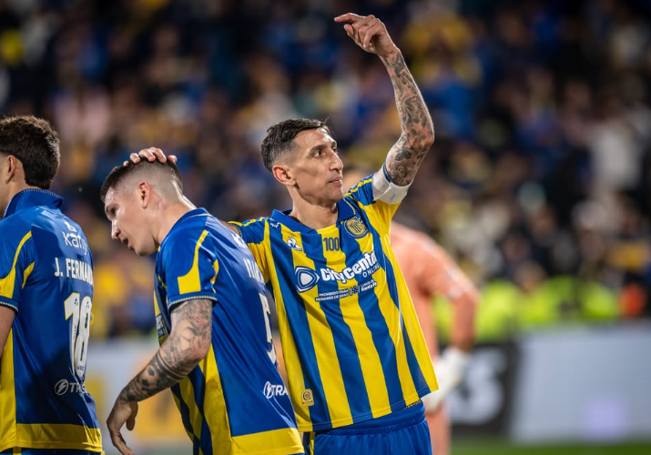

COBERTURA
Siestario: la propuesta que reivindica el ocio llegó a Rosario
Una muestra arquitectónica y artística que invita a frenar el ritmo cotidiano y repensar el descanso en Rosario.
Una muestra arquitectónica y artística que invita a frenar el ritmo cotidiano y repensar el descanso en Rosario.
El encuentro reunió propuestas de arte digital y tecnología en Rosario durante tres jornadas.
La banda cordobesa convocó a una multitud en el Fan Fest de Parque Independencia durante los Juegos Suramericanos.
